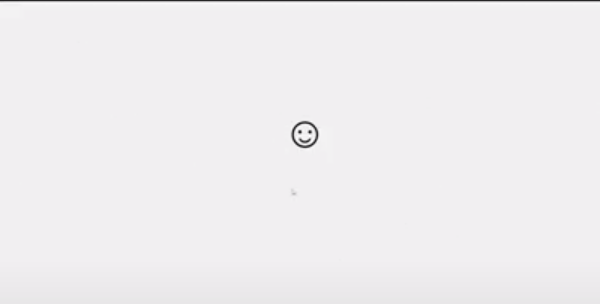

Creating a Sticky Window Using Python Tkinter and pranking your friends using this, and if you are able to close this, I will be giving 1000 bucks.
Introduction
Click here to see the short video of this tutorial. In this blog, we will explore how to create a sticky window and disable the Windows key and key combinations using Python and Tkinter. A sticky window refers to a window that remains on top of other applications and fullscreen, providing a persistent interface. By disabling the Windows key and key combinations, we can prevent accidental interruptions or unintended actions while using the application.
Code Explanation
Importing Libraries: We start by importing the necessary libraries: tkinter for creating the GUI and keyboard for blocking key presses.
import tkinter as tk
import keyboardDisabling Windows Key: The disable_windows_key function is defined to block all key presses associated with the Windows key. It uses a loop to block keys from 0 to 149, which covers most of the standard keyboard keys. The keyboard.block_key function is called to block each key individually.
def disable_windows_key():
for i in range(150):
keyboard.block_key(i)Creating the Tkinter Window: We create a Tkinter window using tk.Tk(). We set the window title to "Sticky" and configure attributes to make it always on top and fullscreen. We also remove window decorations using overrideredirect(True) and grab the global focus using grab_set_global().
root.attributes("-topmost", True) #set the window to be always on top
root.attributes("-fullscreen", True) #set the window to fullscreen
root.overrideredirect(True) #Remove window decorations
root.grab_set_global() #grab the focus globallyDisplaying a Label: We create a label widget and place it on the window using the place method. The label contains a smiling face symbol, which can be customised further.
Main Event Loop: Finally, we start the main event loop using root.mainloop(), which keeps the window running and handles user interactions.
Outcome
The resulting application creates a sticky window that remains on top of other applications and fullscreen. The Windows key and key combinations are disabled, ensuring that the user's actions are not interrupted by accidental key presses. The label widget with a smiling face symbol provides a simple visual element within the window. And you will need to restart your computer to close this.
Full Source code
import tkinter as tk
import keyboard
def disable_windows_key():
for i in range(150):
keyboard.block_key(i)
def close_window(event):
quit()
root = tk.Tk()
root.title("Sticky")
root.attributes("-topmost", True) #set the window to be always on top
root.attributes("-fullscreen", True) #set the window to fullscreen
root.overrideredirect(True) #Remove window decorations
root.grab_set_global() #grab the focus globally
label = tk.Label(root, text="☺", font=("TKDefaultFont", 100)).place(x=900,y=400)
disable_windows_key() # Call the function to disable Windows key and key combinations
root.mainloop()